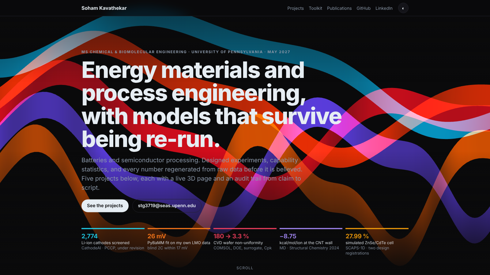
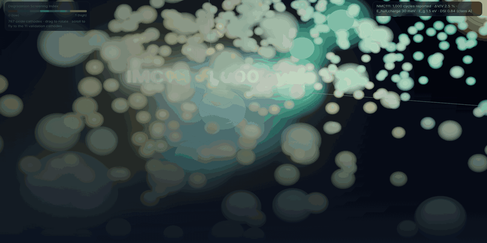
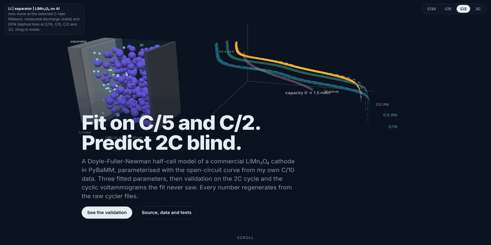
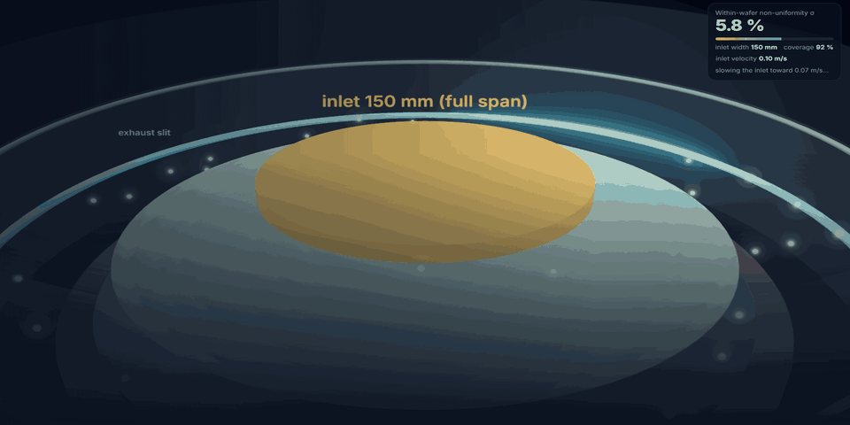
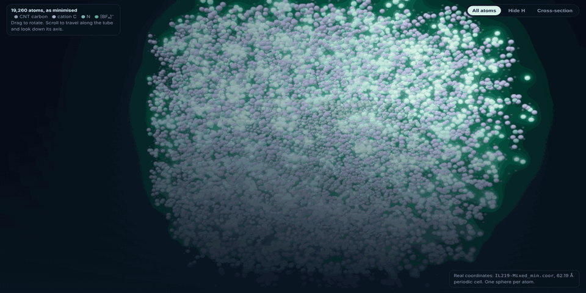
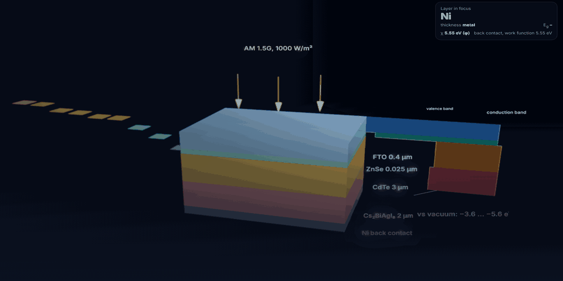
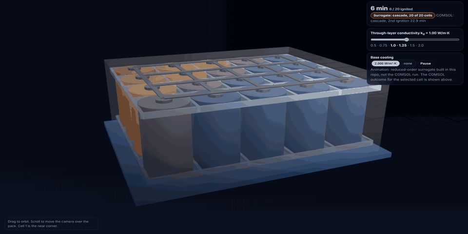

Batteries and semiconductor processing. Designed experiments, capability statistics, and every number regenerated from raw data before it is believed. Six projects below, each with a live 3D page and an audit trail from claim to script. The scene behind this text is built from their own data.
Every repository carries a docs/CLAIMS.md that traces each number on its README to the script and data file that produce it, a one-command reproduce script, and a page built with Three.js from the project's own data.

2,774 Materials Project electrodes through an eight-layer funnel. A three-descriptor Degradation Screening Index beats volume strain alone (0.55) and the metal-identity heuristic it replaces; 10 of 11 on the correct side of the durable split. Sole author; ChemRxiv preprint, manuscript under revision at Phys. Chem. Chem. Phys.

Commercial LMO cells cycled on a Bio-Logic VMP-300, CV 0.1 to 0.3 mV/s and C/10 to 2C. A DFN model fitted on C/5 and C/2 only predicts the unseen 2C voltage within 17 mV and six CV peaks within 80 mV, then splits the 2C loss 74 / 17 / 6 % between ohmic, charge-transfer and diffusion terms. 58 tests.

300 mm showerhead reactor, 2D axisymmetric. The starved deposit was root-caused as mass-transfer limited (Da above 10) and fixed at the inlet: 10 to 150 mm gives 6.1 %. Gaussian-process surrogate with leave-one-out R² 0.944, 10,000-draw Monte Carlo on MFC and thermocouple tolerances, 3D model with asymmetric exhaust at 5.9 %.

All-atom NAMD simulations of four imidazolium [BF₄] ionic liquids in a (15,15) nanotube: chain length sets orientation, binding and mobility. Co-author, Structural Chemistry 35, 1743–1753 (2024). The repository ships the 19,260-atom minimised structure the page renders.

Ten electron-transport layers and nine back-contact metals in a six-parameter DOE; VOC 1.21 V, JSC 25.96 mA cm⁻², FF 89.3 %, labelled as a simulation ceiling. Spiral panel architecture with 17.9 % more active area: two granted Indian design registrations, one utility application under review. Best Poster Award, 61st Annual Convention of Chemists.

A 20-cell 5s4p pack of 4680 cells adapted from COMSOL's validated propagation model: 25 Ah and about 110 kJ per cell, 80 °C trigger. Twelve transient one-hour studies over base cooling from 0 to 2,000 W m⁻² K⁻¹ locate a sharp threshold in through-layer (radial) conductivity between 1.0 and 1.25 W m⁻¹ K⁻¹: below it about 13 of 20 cells cascade within the hour, above it propagation stops at the initiating cell. A documentation-and-analysis repository with a reduced-order surrogate; the model file no longer exists and the README says so.